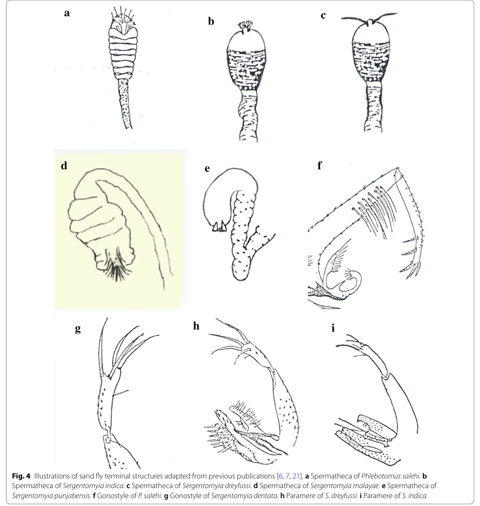

Species › Phlebotomus › Phlebotomus
Phlebotomus salehi
| Classification | Genus Phlebotomus, subgenus Phlebotomus |
|---|---|
| Status | valid |
| Distribution | Records in the project regions: India, Pakistan (Galati et al. 2025) |
| Importance | Known secondary vector of Leishmania major in India and Iran (cited in Wijerathna & Gunathilaka 2020). |
| Sources | Lewis 1978, Wijerathna & Gunathilaka 2020, Akhoundi et al. 2025, Galati et al. 2025 |
How it keys out
The chain of characters leading to this taxon in each key (a ready-made diagnosis).
Oriental Phlebotominae: species and subspecies (Lewis 1978) – couplet 17a
- 1a Cibarial teeth absent or, if present, usually in the form of spicules and not in a definite row (Fig. 27). Pigment patch nearly always absent. Hind ends of abdominal tergites 2-6 with many erect hairs (Fig. 1), sockets as large as on 1. Style of ♂ with three to five spines (Figs 19, 25) and sometimes (some species of subgenus Idiophlebotomus) with two hairs as well ⚠
- 2b Cibarium with spicules or unarmed. Pharynx usually armed. Palp extending further than antenna 3
- 15a Coxite of ♂ with sub-basal hairy process. Genital filaments 1.3-2.3 times as long as pump
- 16a Coxite 0.37-0.74 mm long, its process very small. Style long and cylindrical with three terminal spatulate spines and two other spines. Paramere with two dorsal processes. Surstyle with terminal spines. Pharyngeal armature comprising either a network of lines or scales. Spermatheca with nearly equal segments and a refractive membrane (Figs 2, 3) near bases of ductules
- 17a Female ⚠
Oriental Phlebotominae: species and subspecies (Lewis 1978) – couplet 18b
- 1a Cibarial teeth absent or, if present, usually in the form of spicules and not in a definite row (Fig. 27). Pigment patch nearly always absent. Hind ends of abdominal tergites 2-6 with many erect hairs (Fig. 1), sockets as large as on 1. Style of ♂ with three to five spines (Figs 19, 25) and sometimes (some species of subgenus Idiophlebotomus) with two hairs as well ⚠
- 2b Cibarium with spicules or unarmed. Pharynx usually armed. Palp extending further than antenna 3
- 15a Coxite of ♂ with sub-basal hairy process. Genital filaments 1.3-2.3 times as long as pump
- 16a Coxite 0.37-0.74 mm long, its process very small. Style long and cylindrical with three terminal spatulate spines and two other spines. Paramere with two dorsal processes. Surstyle with terminal spines. Pharyngeal armature comprising either a network of lines or scales. Spermatheca with nearly equal segments and a refractive membrane (Figs 2, 3) near bases of ductules
- 17b Male
- 18b Upper parameral lobe same length as paramere. Surstyle with seven spines, large to very small
Sri Lanka: females (Wijerathna & Gunathilaka 2020) – couplet P2a
- G1a Wings broader, asymmetrical along the length (Fig. 1f). Cibarium unarmed or with scattered spicules, without a pigment patch (Fig. 1d) ⚠
- P1b Head of spermatheca without a distinct neck (Figs 2b, 4a); spermatheca not spindle-shaped
- P2a Spermatheca with 7-8 segments; apical segment not enlarged (Fig. 4a) ⚠
Sri Lanka: males (Wijerathna & Gunathilaka 2020) – couplet P1a
Mediterranean & Middle East: Phlebotomus (Phlebotomus) males (Akhoundi et al. 2025) – couplet 1a
- 1a Paramere strongly curved ⚠
Mediterranean & Middle East: Phlebotomus (Phlebotomus) females (Akhoundi et al. 2025) – couplet 1b
- 1b Spermatheca segments with equal thickness: no ⚠
Figures

